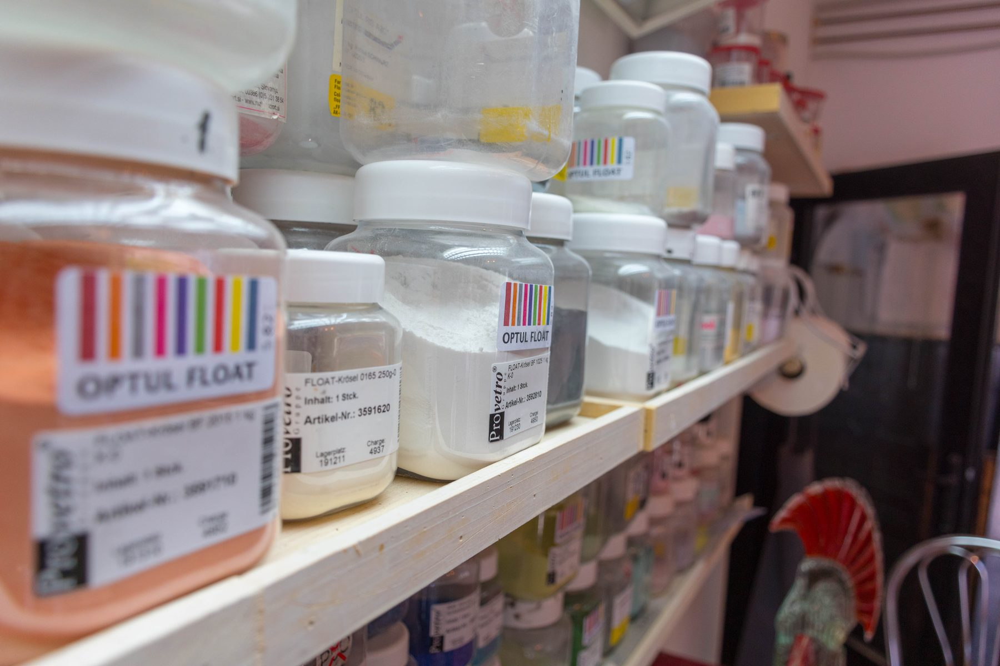
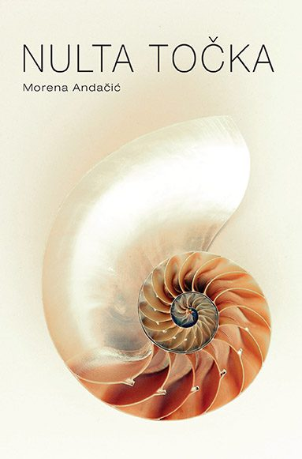

Staklo, boja i vatra
Slikanje, kao moja prva ljubav, izrazilo se kroz izradu umjetničkog stakla u tehnici fuzije stakla. To je spajanje staklenog pigmenta, boje i stakla na visokim temperaturama (800–1300°C).
Više o meni


Umjetnine
Zdjele, skulpture i objekti od fuziranog stakla, svaki komad unikat.

Projekti po mjeri
Ogledala, vrata i kuhinjske stijene osmišljene za vaš prostor.

Radionice
Izrada stakla i slikanje na platnu, u malim grupama u ateljeu.

Knjiga Nulta točka
Osobna priča o buđenju, promjeni i povratku sebi.